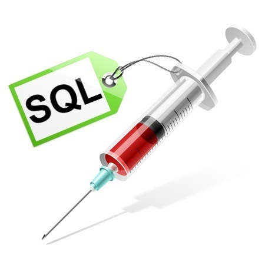

Featured Post
bySanta Maria, Steven * August 28, 2015
In light of the recent scandal facing Ashley Madison, we can log yet another episode of hacking on a massive scale. It seems to me that there's been one of these hacking stories at least once every several months. However, it's not just the "big guys" who are vulnerable--it's also smaller websites that are at risk. Read More
Other Posts
bySanta Maria, Steven * August 14, 2015
When I first thought about getting into a coding bootcamp like Dev Bootcamp, I didn't know the difference between one programming language from the next. I frankly got into Ruby as it was one of the default languages taught in DBC. Read More
by Santa Maria, Steven * August 28, 2015
When I was in my last job, I remember feeling angry and disappointed during one of my people review sessions. "Steven, you did a great job this year," my manager said. "We did however receive some comments that you could improve your communication." What the heck does that mean?Read More